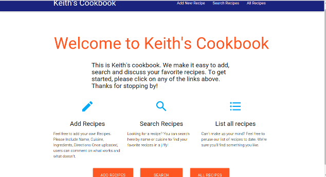

Keith's Cookbook
Link: https://lit-bayou-1476.herokuapp.com/
This was my final project for General Assembly. It is a Ruby on Rails app that allows users to upload recipes and comment on them. This was the first time I was implementing Ajax and jQuery on a project as well as trying out the Materialize CSS framework. The Ajax calls can be seen when you add comments to the recipes without a page reload. It may be simple, but I'm still very proud of this app since it has shown how far I have come since starting General Assembly in March.
